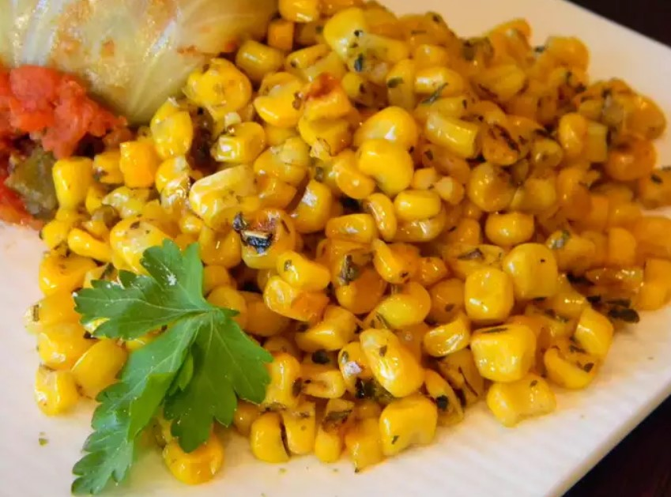

Italian Corn

Description
easy to make by sautéing sliced mushrooms in butter with red wine
Ingredients
- butter
- corn
>
- italian seasoning
- salt
- black pepper
Steps
- Heat a skillet over high heat. Heat butter in hot skillet until almost completely melted; stir in corn. Season corn with Italian seasoning, salt, and black pepper. Cook seasoned corn until light golden brown, about 5 minutes.